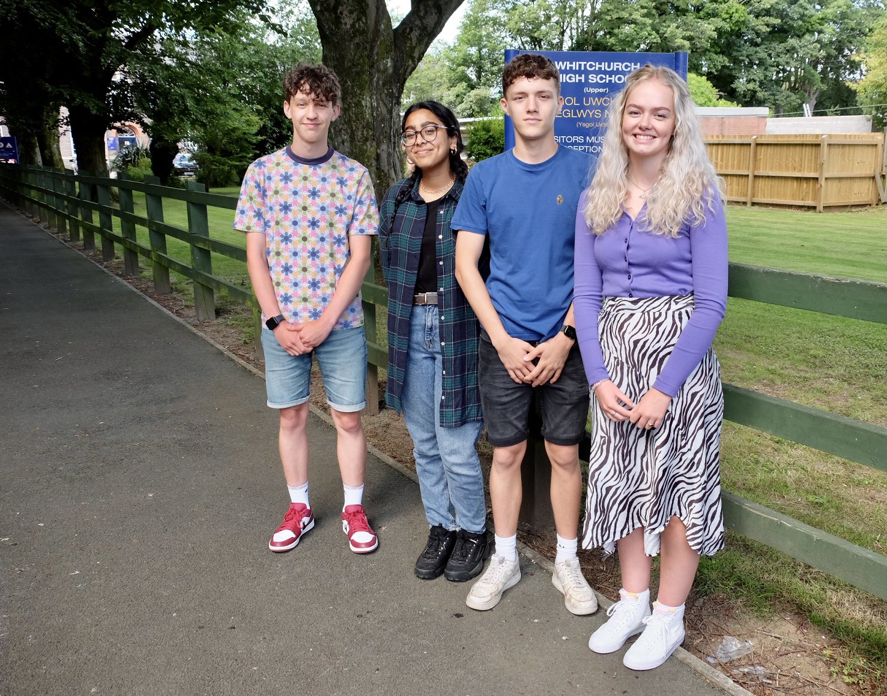

"A thriving and successful Sixth Form with a strong international ethos, offering high standards of teaching and pastoral care in a friendly learning environment with quality facilities."
We are very proud of the enormous contributions and achievements of our Sixth Form to school life. The overwhelming majority of our year 11 students chose to stay on and continue their education with us and we value the continued confidence and trust they, and their parents, place in the school for them to continue with their studies at advance level. Every year we also welcome external students who chose to join the Whitchurch Sixth Form Centre and they soon settle into School life.
Whitchurch High School is a better school for the contribution the sixth form collectively makes to the school character and ethos. We believe that the school's specialism in providing courses, support services and an environment, which meets the needs of our 16-19 year old students, allows them to have tremendous opportunities for enhanced career progression. We are always delighted to hear of the successes of our past students of many of which who go onto higher education.
As part of the wider Post 16 education Local Area Curriculum all English Medium Cardiff School Sixth forms are looking to further strengthen collaborative links. We are continuing to work with our previous family cluster of schools involving Cardiff High, Cathays High, Llanishen High and have widened our engagement to include The Bishop of Llandaff and Radyr High Schools. All our schools have links with Cardiff and Vale College (formally Glan Hafren and Barry College). Within these partnerships we have common timetable times so that students have the opportunity of widening their curriculum choices to include vocational courses.
The non-Whitchurch High Schools based courses will have the institution named alongside the course. Most of the College courses (as in the past) will not be shown within our options as they will involve studying full-time at the college and would not fit within the cluster timetable. Applications for these courses will be directly with the college.
Do You Qualify For Education Maintenance Allowance (EMA)?
EMA is for 16 to 18 year olds living in Wales, who want to continue their education after school leaving compulsary educattion. Whilst studying at Whitchurch High School, and if you're eligible, you could get £30 a week, paid every two weeks.
If you think you may qualify to recieve EMA, please click the image below for further information and an application pack.
At Whitchurch High School we use Unifrog that helps our students make the best choices, and submit the strongest applications to University. Please click the image below to be redirected.

Click Here for a list of our past lead students from 1944 to modern day.